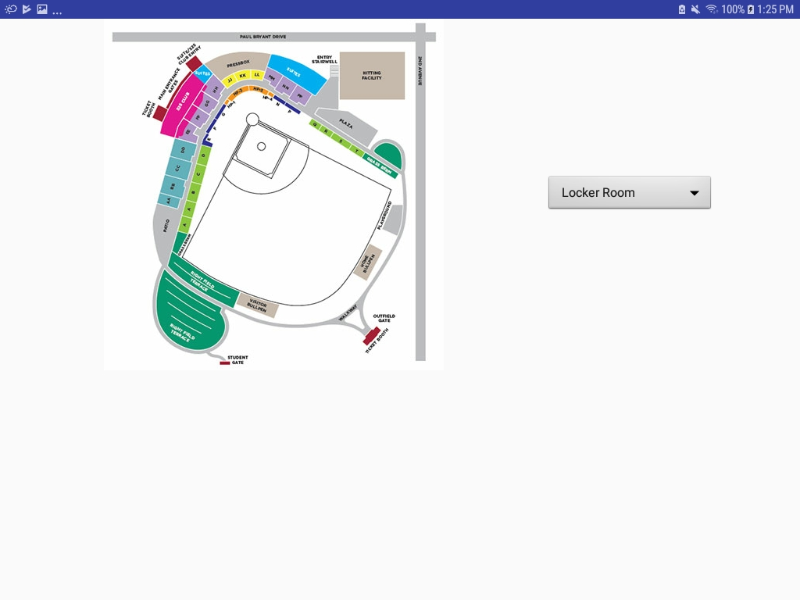

Scan
The scan activity allows a user to scan a QR code and select Launch Site to take them to the site's page so they can view the video for that location.

Map
The map activity shows the user a map of the stadium and gives them the option to go directly to each location's page containing their video.
